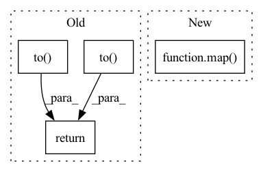

Pattern ID :33847

Before Change
self.pos = 0
def _get_samples(self, batch_inds, env=None):
return (self._normalize_obs(self.observations[batch_inds, 0, :], env).to(self.device),
self.actions[batch_inds, 0, :].to(self.device),
self._normalize_obs(self.next_observations[batch_inds, 0, :], env).to(self.device),
self.dones[batch_inds].to(self.device),
self._normalize_reward(self.rewards[batch_inds], env).to(self.device))
After Change
self._normalize_obs(self.next_observations[batch_inds, 0, :], env),
self.dones[batch_inds],
self._normalize_reward(self.rewards[batch_inds], env))
return tuple(map(self.to_torch, data))
class RolloutBuffer(BaseBuffer):
In pattern: SUPERPATTERN
Frequency: 3
Non-data size: 4
Instances
Fragment ID: 97073257
Project Name: dlr-rm/stable-baselines3
Commit Name: f7af08bea480357e3e918a05a293c683b79e734b
Time: 2020-02-03
Author: antonin.raffin@dlr.de
File Name: torchy_baselines/common/buffers.py
M Class Name: ReplayBuffer
N Class Name: ReplayBuffer
M Method Name: _get_samples(3)
N Method Name: _get_samples(3)
M Parent Class: BaseBuffer
N Parent Class: BaseBuffer
M File Name: torchy_baselines/common/buffers.py
N File Name: torchy_baselines/common/buffers.py
M Start Line: 127
M End Line: 132
N Start Line: 170
N End Line: 178
'>
Before Change
start_idx += batch_size
def _get_samples(self, batch_inds, env=None):
return (self.observations[batch_inds].to(self.device),
self.actions[batch_inds].to(self.device),
self.values[batch_inds].flatten().to(self.device),
self.log_probs[batch_inds].flatten().to(self.device),
self.advantages[batch_inds].flatten().to(self.device),
self.returns[batch_inds].flatten().to(self.device))
After Change
self.log_probs[batch_inds].flatten(),
self.advantages[batch_inds].flatten(),
self.returns[batch_inds].flatten())
return tuple(map(self.to_torch, data))
'>
Fragment ID: 97073256
Project Name: dlr-rm/stable-baselines3
Commit Name: f7af08bea480357e3e918a05a293c683b79e734b
Time: 2020-02-03
Author: antonin.raffin@dlr.de
File Name: torchy_baselines/common/buffers.py
M Class Name: RolloutBuffer
N Class Name: RolloutBuffer
M Method Name: _get_samples(3)
N Method Name: _get_samples(3)
M Parent Class: BaseBuffer
N Parent Class: BaseBuffer
M File Name: torchy_baselines/common/buffers.py
N File Name: torchy_baselines/common/buffers.py
M Start Line: 255
M End Line: 261
N Start Line: 319
N End Line: 327
'>
Before Change
def sample(self) -> Batch:
batch = random.sample(self.memory, self.batch_size)
batch = Batch(*zip(*batch))
s = torch.tensor(batch.s, dtype=torch.float).view(self.batch_size, -1).to(get_device())
a = torch.tensor(batch.a, dtype=torch.float).view(self.batch_size, -1).to(get_device())
r = torch.tensor(batch.r, dtype=torch.float).view(self.batch_size, 1).to(get_device())
ns = torch.tensor(batch.ns, dtype=torch.float).view(self.batch_size, -1).to(get_device())
d = torch.tensor(batch.d, dtype=torch.float).view(self.batch_size, 1).to(get_device())
return Batch(s, a, r, ns, d)
After Change
r = torch.tensor(batch.r, dtype=torch.float).view(self.batch_size, 1)
ns = torch.tensor(batch.ns, dtype=torch.float).view(self.batch_size, -1)
d = torch.tensor(batch.d, dtype=torch.float).view(self.batch_size, 1)
return Batch(*list(map(lambda x: x.to(get_device()), [s, a, r, ns, d])))
'>
Fragment ID: 97073261
Project Name: zhihanyang2022/off-policy-continuous-control
Commit Name: f58d7b575cf937b49732329dc292f627a39147ef
Time: 2021-05-16
Author: yangz2@carleton.edu
File Name: library/basics/replay_buffer.py
M Class Name: ReplayBuffer
N Class Name: ReplayBuffer
M Method Name: sample(1)
N Method Name: sample(1)
M Parent Class:
N Parent Class:
M File Name: library/basics/replay_buffer.py
N File Name: library/basics/replay_buffer.py
M Start Line: 26
M End Line: 31
N Start Line: 24
N End Line: 32